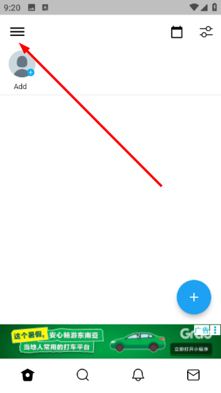

TwiNote 用了一年：从"又一个笔记应用"到"没它不行"的真实感受
从 v1.2 用到现在，桌面小组件每天帮我记灵感、搜索功能从找不到到离不开，也见证了中文输入 bug 一步步被修掉。这不是测评，是过日子的真实反馈。
装TwiNote官网到现在刚好一年多，从 v1.2 一路更到国内版 v1.3.2。当初为什么装？说白了就是刷到一条"小组件速记"的帖子，觉得这个点有意思，就顺手从TwiNote下载装了。没抱太大期待——笔记应用装过不少，大部分删的时候连"再见"都懒得说。
但这一年下来，它没被我删掉。而且出现了一个反直觉的变化：我用得越多，越觉得它和其他笔记应用不一样。
越用越顺手的：桌面小组件这块敲门砖
刚装的时候，小组件对我来说就是个"看起来挺酷的摆设"。我花了十分钟调了下桌面布局，把小组件拖到第一页最顺手的位置，然后就忘了——毕竟原来都是打开某个笔记应用再点加号，这个习惯改不了。
转折点是一次深夜加班，脑子里突然冒出来一个项目方案的雏形，当时不想开电脑，手机又在充电，锁屏滑到桌面第一眼就是那个小组件。点一下"+"直接进输入框，打了三行字按返回键就存了——整个过程可能不到八秒。
从那之后就回不去了。
原来打开应用再点加号的流程，中间有太多机会被打断：解锁手势慢了一拍、桌面滑错了页、点开应用又弹出更新提示、甚至看到其他 app 的角标就顺手点进去了。小组件把这些中间环节全砍了——划两下桌面、打字、返回，完事。
用得越久越觉得这个设计的妙处：它不是给你"又一个记笔记的入口"，而是给你"零启动成本的那一下"。灵感这种东西真的很贱，你给它一秒延迟，它就溜走了。
不过有段时间小组件刷新有点慢，明明半小时前写了新笔记，预览型小组件还在显示三天前的旧内容。后来翻了下设置里的电池优化，发现手机默认把 TwiNote 归进了"后台限制"——取消限制之后就正常了。这种细节如果不是长期用，根本不会去注意。
当初没发现的：搜索功能原来是刚需
刚装的时候，我觉得搜索功能是个可有可无的东西——笔记又不是写论文，用得着搜吗？
直到上个月翻半年前的笔记找一条关于 Python 装饰器的学习心得。那堆笔记有三四十条，从一月到六月混在一条时间线上，翻了五分钟没找到。后来抱着试试看的心态进了搜索，输入"装饰器"，三秒钟出来四条匹配，其中两条就是我要的。
那天我才意识到，我之前低估了时间线的副作用：笔记多了之后，"翻历史"的成本会越来越高，搜索才是真正的救星。
TwiNote 的搜索其实很朴素——就是关键词匹配标题和正文，不支持 AND、OR 那种布尔运算，结果按时间倒序排。但够用。用了几个月之后，去TwiNote文档翻了一下搜索功能的说明，又自己摸索出几条规律：搜的时候别想"我之前写过一个关于工作的笔记"，要想"那条笔记里提到了周会还是 Q2 计划"；如果记得大概时间，先在日历视图里缩小范围再搜，效率高不少。
v1.3.2 更新之后加了关键词高亮——标题和正文里的匹配词会加粗，找起来更直观了。这个改动不大，但体验真的是"差一点"和"好很多"的区别。

天天离不开的：随手记变成了肌肉记忆
现在每天打开 TwiNote 的次数大概在二十到三十次，大部分都是通过小组件进的。具体记什么？其实不是什么"有价值的内容"——
- 排队买咖啡时想到的一个产品文案方向
- 下班路上在地铁里看到的一个有意思的广告
- 周末看书时划到的一个句子加自己的两行感想
- 甚至是"明天要去趟超市买牛奶和鸡蛋"
如果只让我选一个最常用的场景，那就是看书时的随手记。以前看纸质书用荧光笔划，但划完就没了，回头翻书找到那段话也忘了当时怎么想的。现在看书时旁边放着手机，读到有感触的段落，拿起手机划两下桌面进小组件，打两三句话，按返回继续看书。这种"不打断阅读节奏"的记录方式，是我之前用过的任何笔记应用都没做到的。

碰都没再碰的：心情标签和角色功能
刚装那会儿还认真研究过"心情标签"和"角色"功能——可以给笔记贴上"开心""焦虑""平静"之类的标签，还能模拟不同角色发"台词"。觉得挺有意思，前两周每条笔记都选个心情标签。
然后就忘了。
不是功能不好用，是真的没这个习惯。写笔记的时候脑子里想的是"这个念头先记下来"，不是"我现在是什么心情"。角色功能更是——我到现在也没搞明白什么场景下需要让不同角色"发表观点"。也许对于写同人或者练台词的人有用，但对我这种只想"快速把脑子里的东西抓下来"的用户来说，这两个功能至今都是摆设。
一年下来的观感修正
当初装它的时候，我给它的定位是"又一个做差异化小功能的笔记应用"——小组件是卖点，其他功能凑合能用就行。
但现在我得修正这个判断：TwiNote 的核心竞争力不是某个单点功能，而是它在"降低记录门槛"这件事上的一致性。
你看它做的所有事情——小组件速记砍启动成本、搜索砍翻历史的成本、时间线砍分类整理的成本——全在往同一个方向走：让你在"想记"和"真记下来"之间的那道门槛越来越低。其他笔记应用经常陷入的误区是"功能越多越好"，TwiNote 走的是另一条路：能用一个动作完成的事，绝不让你走两步。
不过也有被我高估的地方。当初以为它能成为我的"第二大脑"——把所有知识管理都搬过来。但用了一年发现，它更像是我的"草稿本"，不是"资料库"。知识要点速记和阅读感想确实写了不少，但真要整理成系统的东西，我还是会导出到 txt 或者 csv 里，搬到电脑上慢慢弄。TwiNote 做的是"收集"，不是"整理"——把这点认清了，反而用得更舒服。
一年之后：会不会卸载？
不会。
但也不是"此生唯一"的那种忠诚。如果哪天出现了一个在小组件体验上做得更极致的应用，或者 TwiNote 的更新开始变得奇怪——比如加了一堆广告、或者核心功能开始收费——那我可能会搬走。但目前来看，这些信号都没出现。
反而有几个让我安心的细节：中文输入法的兼容性问题从 v1.2 到 v1.3.2 一点点在修——页面跳动的问题修了、切换崩溃的问题修了；搜索体验在优化；小组件的稳定性在提升。不是那种"大版本革命"式的更新，但每一步都踩在长期用户真正会遇到的痛点上。
说不上惊艳，也没什么好吐槽的。就是一个"用得顺手"的工具——像手里用了一年的杯子、键盘上摸熟了的键帽。没什么存在感，但哪天不在了，第一个想到的就是"哎，刚才那个灵感我记哪去了"。
这大概就是我对一个笔记应用的最高评价吧。整理出来的资料在GitHub、Gitee、GitCode都有，国内网络访问的话后两个通常更稳一些。